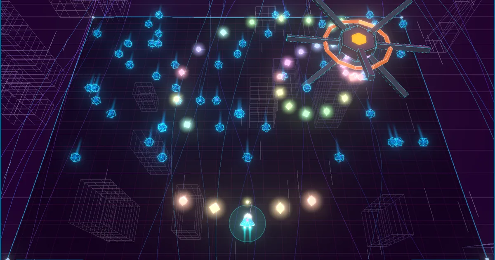

01 / 04AWARD-WINNING SERIES
80年代アーケードの手ざわりを、ネオンと現代のゲームデザインで再構築したシリーズ。
ネオンが弾け、スコアが跳ねる、一瞬で熱くなれるアクションゲームです。
IVS NEOCREA準グランプリ
IVS NEOCREABandai Namco 021 Fund賞
触って伝わる、遊びのショーケース。
ネオンが弾けるアーケードから、本気のAIと向き合うボードゲームまで、
すべてブラウザですぐ遊べる「動くポートフォリオ」です。
80年代アーケードの手ざわりを、ネオンと現代のゲームデザインで再構築したシリーズ。
ネオンが弾け、スコアが跳ねる、一瞬で熱くなれるアクションゲームです。
ルールは知っていても、相手が強いと奥が深い。
手軽に遊べるパズルから、本気のAIと戦えるボードゲームまで。
制作途中のゲームを先行公開しています。
ルールやバランスは遊びながら調整中です。
音楽と絵とコードを行き来しながら、“遊べるもの”をつくっています。ゲームのBGMは自分で作曲し、ボードゲームのAIは自分のMacで学習させて育てています。ネオンが弾けるアーケードシリーズ NEORETRO ARCADES は、IVS NEOCREA で準グランプリと Bandai Namco 021 Fund賞をいただきました。このサイトは、AIと一緒につくった作品をそのまま遊べる、動くポートフォリオです。